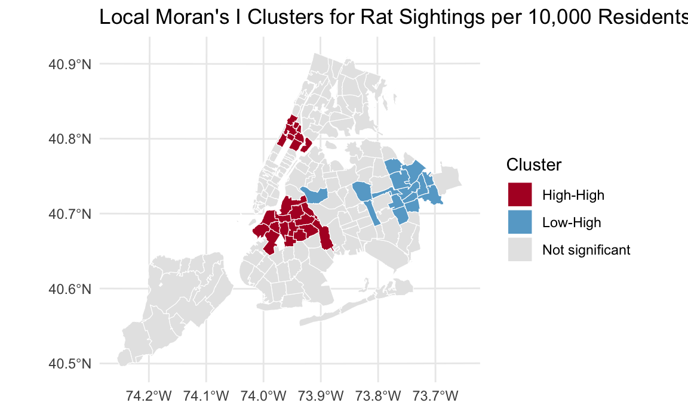
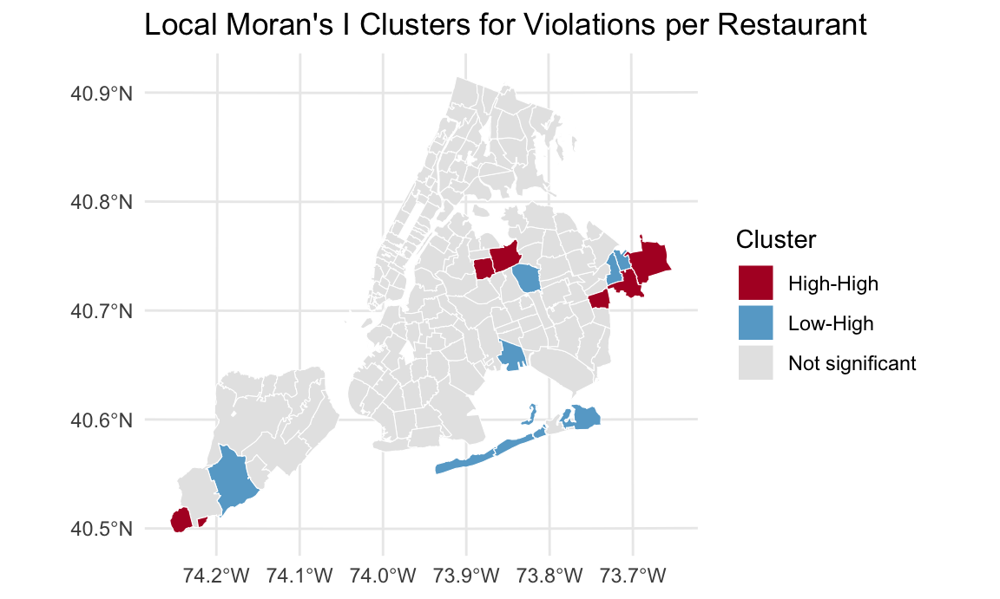
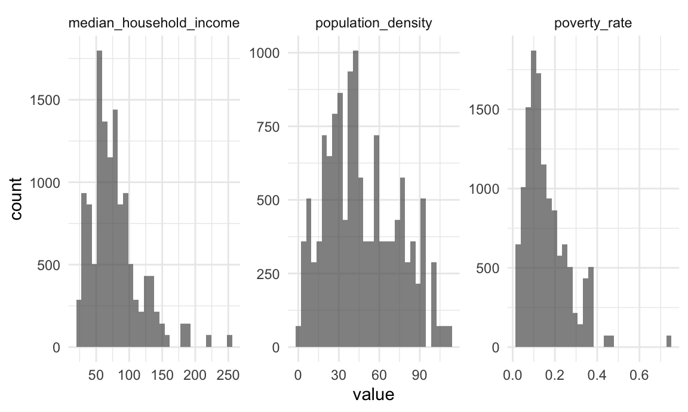
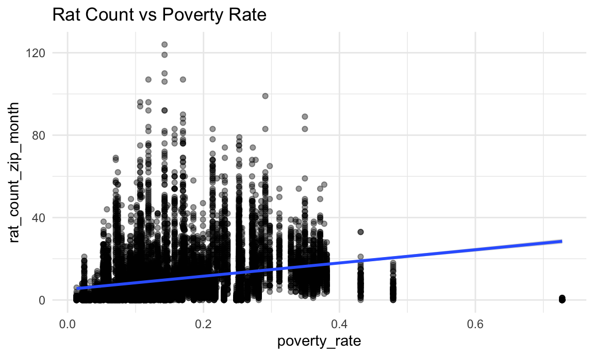
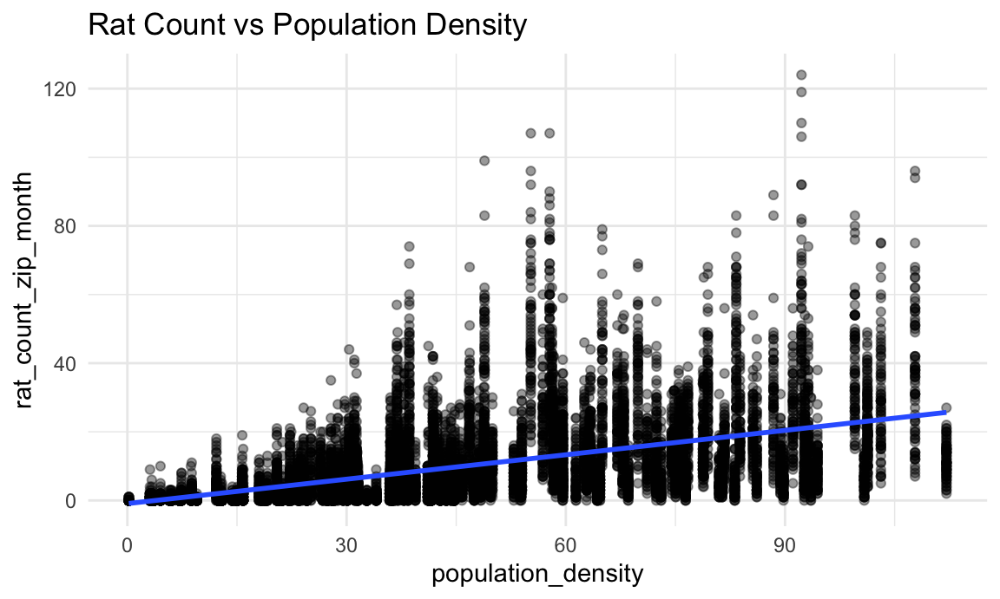
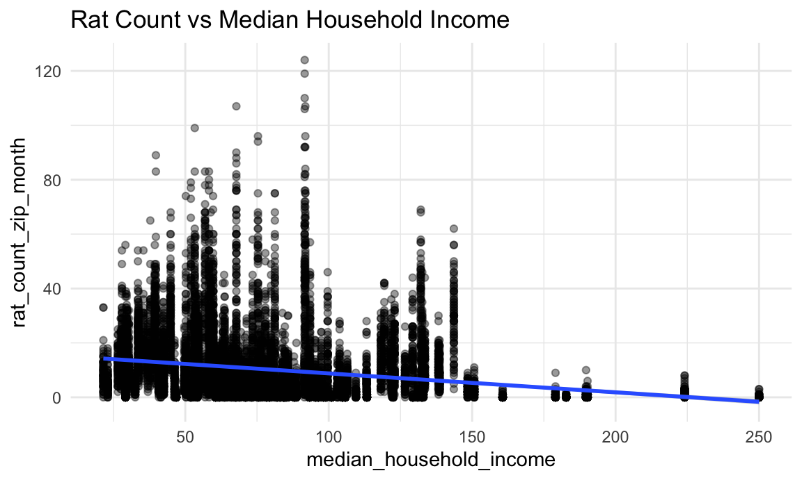
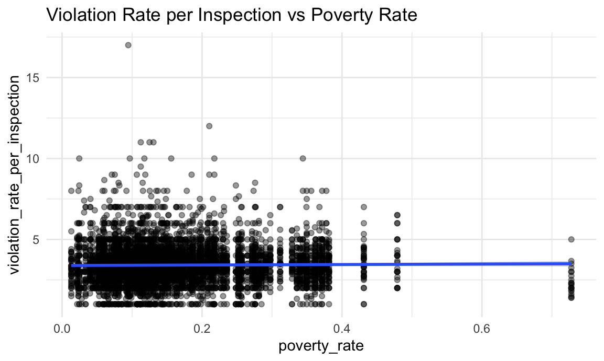

EDA
knitr::opts_chunk$set(
echo = TRUE,
warning = FALSE,
fig.width = 6,
fig.asp = .6,
out.width = "90%"
)
theme_set(theme_minimal() + theme(legend.position = "bottom"))
options(
ggplot2.continuous.colour = "viridis",
ggplot2.continuous.fill = "viridis"
)
scale_colour_discrete = scale_colour_viridis_d
scale_fill_discrete = scale_fill_viridis_dSpatial Patterns: Seeing Where Rats Live
Before doing any modelling, we want to know whether ZIP codes are a reasonable spatial unit of analysis. Do rat sightings show coherent spatial patterns at the ZIP level, with recognizable “hot” and “cold” areas? Also for restaurants, do health violations show a similar, spatially structured pattern across ZIP codes, and are the “risky” food environments in the same areas where rat activity is high?
df_merged <- readr::read_csv("data/zip_year_month_merged.csv") |>
janitor::clean_names() |>
dplyr::mutate(zipcode = as.character(zipcode))zip_df <- df_merged |>
group_by(zipcode) |>
summarise(
rat_count_total = sum(rat_count_zip_month, na.rm = TRUE),
violation_total = sum(violation_count_zip_month, na.rm = TRUE),
inspection_total = sum(inspection_count_zip_month, na.rm = TRUE),
total_pop = mean(total_pop, na.rm = TRUE)
) |>
mutate(
rats_per_10000 = 10000 * rat_count_total / total_pop,
violations_per_restaurant = violation_total / inspection_total
) |>
filter(
!is.na(rats_per_10000),
!is.na(violations_per_restaurant)
)ny_zcta <- tigris::zctas(state = "NY", year = 2010) |>
dplyr::rename(zipcode = ZCTA5CE10) |>
dplyr::mutate(zipcode = as.character(zipcode))
ny_zip_sf <- ny_zcta |>
dplyr::left_join(zip_df, by = "zipcode") |>
dplyr::filter(!is.na(violations_per_restaurant)) |>
sf::st_transform(2263) Rat Sightings per 10,000 Residents
The map shows strong spatial variation in rat sightings per 10,000 residents. Staten Island and much of far-eastern Queens appear as clear “cold spots” with relatively few rat complaints. In contrast, several ZIP codes in central and northern Brooklyn and parts of the Bronx stand out as “hot spots” with very high rat sighting rates. Manhattan shows a mixed picture: midtown and some dense residential areas have elevated rates, while a few upper-Manhattan ZIP codes are more moderate. These gradients suggest that ZIP-level variation is not random noise: neighboring ZIPs often share similar levels, and large, contiguous high-burden and low-burden areas are visible. This supports using ZIP code as the unit of analysis for subsequent spatial and spatio-temporal work.
ggplot(ny_zip_sf, aes(fill = rats_per_10000)) +
geom_sf(color = "white", size = 0.1) +
scale_fill_viridis_c(option = "C") +
labs(
title = "Rat Sightings per 10,000 Residents (2019–2024)",
fill = "Rats / 10,000"
) +
theme_minimal()
Violations per Restaurant
Violations per restaurant also vary systematically by location. Staten Island and some lower-density parts of Brooklyn and Queens tend to have lower violation rates, while several ZIP codes in northern Brooklyn, western Queens, and portions of Manhattan display higher average violations per restaurant. The pattern is not identical to rat activity: some areas with high violation rates do not have the highest rat complaint rates, and vice versa.
ggplot(ny_zip_sf, aes(fill = violations_per_restaurant)) +
geom_sf(color = "white", size = 0.1) +
scale_fill_viridis_c(option = "C") +
labs(
title = "Violations per Restaurant (2019–2024)",
fill = "Violations / Inspection"
) +
theme_minimal()
Overall, both outcomes show meaningful spatial structure at the ZIP level, confirming that ZIP codes are a workable unit for analyzing neighborhood-level food environment and rodent burden.
Are Hotspots Really Clustering?
In the Local Moran’s I maps, each ZIP code is classified into one of four cluster types based on its own value and the average of its neighbors:
High–High: ZIP codes with high values surrounded by neighbors that also have high values.
Low–Low: ZIP codes with low values surrounded by low-value neighbors.
High–Low: ZIP codes with high values surrounded by low-value neighbors. These are potential spatial outliers that stand out from a low-value area.
Low–High: ZIP codes with low values surrounded by high-value neighbors. These are the opposite type of spatial outlier.
nb <- spdep::poly2nb(ny_zip_sf)
lw <- spdep::nb2listw(nb, style = "W", zero.policy = TRUE)Local Moran’s I Clusters for Rat Sightings per 10,000 Residents
rats_lisa <- spdep::localmoran(
ny_zip_sf$rats_per_10000,
lw,
zero.policy = TRUE
)
rats_lisa_df <- as.data.frame(rats_lisa)
ny_zip_sf <- ny_zip_sf |>
dplyr::mutate(
rats_I = rats_lisa_df$Ii, # 第 1 列
rats_p = rats_lisa_df[[ncol(rats_lisa_df)]], # 最后一列，通常是 p-value
rats_mean = mean(rats_per_10000, na.rm = TRUE),
rats_centered = rats_per_10000 - rats_mean,
rats_lag = spdep::lag.listw(lw, rats_per_10000, zero.policy = TRUE),
rats_quad = dplyr::case_when(
rats_centered > 0 & rats_lag > 0 & rats_p <= 0.05 ~ "High-High",
rats_centered < 0 & rats_lag < 0 & rats_p <= 0.05 ~ "Low-Low",
rats_centered > 0 & rats_lag < 0 & rats_p <= 0.05 ~ "High-Low",
rats_centered < 0 & rats_lag > 0 & rats_p <= 0.05 ~ "Low-High",
TRUE ~ "Not significant"
)
)For rat sightings, High–High clusters appear in several contiguous ZIP codes in central Brooklyn and parts of the Bronx, indicating true neighborhood-level hotspots rather than single noisy ZIP codes. Low–Low clusters are concentrated in Staten Island and some peripheral ZIPs in Queens, reinforcing the idea of structurally lower rat burden in those areas. A few High–Low or Low–High ZIPs sit on the edges of these clusters, suggesting transition zones where rat activity is changing or where local conditions differ from the broader neighborhood context.
cluster_cols <- c(
"High-High" = "#b2182b",
"Low-Low" = "#2166ac",
"High-Low" = "#ef8a62",
"Low-High" = "#67a9cf",
"Not significant" = "grey90"
)
ggplot2::ggplot(ny_zip_sf, ggplot2::aes(fill = rats_quad)) +
ggplot2::geom_sf(color = "white", size = 0.1) +
ggplot2::scale_fill_manual(values = cluster_cols) +
ggplot2::labs(
title = "Local Moran's I Clusters for Rat Sightings per 10,000 Residents",
fill = "Cluster"
) +
ggplot2::theme_minimal()
Local Moran’s I Clusters for Violations per Restaurant
viol_lisa <- spdep::localmoran(
ny_zip_sf$violations_per_restaurant,
lw,
zero.policy = TRUE
)
viol_lisa_df <- as.data.frame(viol_lisa)
ny_zip_sf <- ny_zip_sf |>
dplyr::mutate(
viol_I = viol_lisa_df$Ii,
viol_p = viol_lisa_df[[ncol(viol_lisa_df)]],
viol_mean = mean(violations_per_restaurant, na.rm = TRUE),
viol_centered = violations_per_restaurant - viol_mean,
viol_lag = spdep::lag.listw(lw, violations_per_restaurant, zero.policy = TRUE),
viol_quad = dplyr::case_when(
viol_centered > 0 & viol_lag > 0 & viol_p <= 0.05 ~ "High-High",
viol_centered < 0 & viol_lag < 0 & viol_p <= 0.05 ~ "Low-Low",
viol_centered > 0 & viol_lag < 0 & viol_p <= 0.05 ~ "High-Low",
viol_centered < 0 & viol_lag > 0 & viol_p <= 0.05 ~ "Low-High",
TRUE ~ "Not significant"
)
)For violations per restaurant, High–High clusters appear in several ZIP codes in parts of northern Brooklyn and western Queens, as well as a few ZIPs in Manhattan. These areas represent dense restaurant corridors where many establishments have above-average violation rates and are surrounded by similarly high-violation neighbors. Low–Low clusters are again found in much of Staten Island and some lower-density fringe ZIPs, where restaurants tend to have fewer violations and neighboring areas share this profile.
The overlap between rat High–High clusters and violation High–High clusters is partial but not complete. This suggests that while poor restaurant conditions may contribute to rodent problems, rat burden is also shaped by other factors such as housing quality, building age, waste management, and overall neighborhood density.
cluster_cols <- c(
"High-High" = "#b2182b",
"Low-Low" = "#2166ac",
"High-Low" = "#ef8a62",
"Low-High" = "#67a9cf",
"Not significant" = "grey90"
)
ggplot2::ggplot(ny_zip_sf, ggplot2::aes(fill = viol_quad)) +
ggplot2::geom_sf(color = "white", size = 0.1) +
ggplot2::scale_fill_manual(values = cluster_cols) +
ggplot2::labs(
title = "Local Moran's I Clusters for Violations per Restaurant",
fill = "Cluster"
) +
ggplot2::theme_minimal()
Bivariate Hotspots for Rats Sighting and Violations
Rat Sightings per 10,000 × Violations per Restaurant
Double-burden areas (high rats, high violations): Several central and northern Brooklyn ZIPs and parts of the Bronx fall into the highest category for both measures. These are neighborhoods where residents are simultaneously exposed to poor restaurant hygiene and high rodent activity. The color gradient suggests these hotspots are not isolated; similar colors extend into adjacent ZIPs, indicating a spatial diffusion pattern rather than a single problematic block.
Low-burden areas (low rats, low violations): Much of Staten Island and portions of eastern Queens cluster in the bottom-left part of the bivariate legend. These areas likely have lower population and restaurant density, more single-family housing, and possibly better waste management, all of which can reduce both violations and rat sightings.
High rats, relatively low violations (rat-high / restaurant-low): Some ZIPs near double-burden hotspots show high rat sightings but only moderate or low restaurant violations. One plausible explanation is that these neighborhoods may have fewer restaurants but are adjacent to high-density commercial areas; rats can travel from nearby hotspots via connected sewers, alleys, and transit corridors, even if local restaurants are not the main driver.
High violations, relatively low rats (restaurant-high / rat-low): In contrast, a few ZIPs with many restaurants and elevated violation rates do not yet show the highest rat complaint rates. These may be emerging risk areas where poor restaurant hygiene has not yet translated into widespread community rat complaints, or where other environmental conditions (e.g., newer building stock, less underground infrastructure, more aggressive pest control) are temporarily buffering rat populations.
ny_zip_sf <- ny_zip_sf |>
dplyr::mutate(
viol_tertile = dplyr::ntile(violations_per_restaurant, 3),
rats_tertile = dplyr::ntile(rats_per_10000, 3),
bi_code = dplyr::if_else(
is.na(viol_tertile) | is.na(rats_tertile),
NA_character_,
paste0("V", viol_tertile, "R", rats_tertile)
),
bi_numeric = dplyr::if_else(
is.na(viol_tertile) | is.na(rats_tertile),
NA_integer_,
(viol_tertile - 1) * 3 + rats_tertile
)
)
bi_cols <- viridis::cividis(9)
names(bi_cols) <- as.character(1:9)
p_map <- ggplot2::ggplot(ny_zip_sf, ggplot2::aes(fill = factor(bi_numeric))) +
ggplot2::geom_sf(color = "white", size = 0.1) +
ggplot2::scale_fill_manual(
values = bi_cols,
na.value = "grey90",
guide = "none"
) +
ggplot2::labs(
title = "Bivariate Map: Rat Sightings per 10,000 × Violations per Restaurant"
) +
ggplot2::theme_minimal()
legend_df <- tidyr::expand_grid(
viol_tertile = 1:3,
rats_tertile = 1:3
) |>
dplyr::mutate(
bi_numeric = (viol_tertile - 1) * 3 + rats_tertile,
x = viol_tertile,
y = rats_tertile
)
p_legend <- ggplot2::ggplot(legend_df, ggplot2::aes(x, y, fill = factor(bi_numeric))) +
ggplot2::geom_tile(color = "white") +
ggplot2::scale_fill_manual(values = bi_cols, guide = "none") +
ggplot2::scale_x_continuous(
breaks = c(1, 3),
labels = c("Low", "High"),
expand = c(0, 0)
) +
ggplot2::scale_y_continuous(
breaks = c(1, 3),
labels = c("Low", "High"),
expand = c(0, 0)
) +
ggplot2::labs(
x = "Violations per Restaurant",
y = "Rat Sightings per 10,000"
) +
ggplot2::coord_equal() +
ggplot2::theme_minimal(base_size = 9)
(p_map | p_legend) +
patchwork::plot_layout(widths = c(4, 0.8))
Rat Sighting Temporal Exploration
Next, we aim to examine whether there are temporal trends in rat sighting. Specifically, we explore potential seasonal patterns as well as differences across months and years. For this analysis, we use the cleaned merged dataset at the ZIP code × year × month level.
rat=read_csv("./data/zip_year_month_merged.csv")|>
mutate(month=as.integer(month)) |>
group_by(year, month) |>
summarise(rat_count_month = sum(rat_count_zip_month, na.rm = TRUE),.groups = "drop") |>
arrange(year, month) |>
mutate(
month_label=month.abb[month],
month_label=factor(month_label, levels = month.abb)
) Monthly Rat Sightings in NYC (2019–2024)
First, we examined the monthly total number of rat sightings from 2019 to 2024. The line plot clearly reveals a distinct seasonal pattern: rat sightings typically rise from spring into late summer (May–September), peak around July–August, and drop sharply during winter months. This pattern is likely driven by seasonal environmental factors such as temperature, food availability, and increased outdoor human activity (reference1).
Second, there are noticeable year-to-year differences, particularly around the COVID-19 pandemic period. Counts in 2020 are substantially lower, which may reflect reduced human activity during lockdown (e.g., fewer restaurant operations, less outdoor waste, and lower reporting frequency). However, beginning in 2021, sightings rebounded quickly and reached the highest peak in summer 2022 (approximately 3000 reports). This suggests a potential increasing long-term trend in rat activity, possibly related to environmental changes or differences in municipal control strategies.
plot_ly(
rat,
x = ~month_label,
y = ~rat_count_month,
color = ~factor(year),
type = 'scatter',
mode = 'lines+markers'
) |>
layout(
xaxis = list(title = "Month"),
yaxis = list(title = "Rat Sightings Count")
)Distribution of Monthly Rat Sightings per ZIP
At the same time, we considered another important question: What does the distribution of NYC ZIP–Month rat sightings look like? Are there substantial differences across geographic areas? How many ZIP–Month observations report zero or very low counts, and how many approach the higher end of the range?
The histogram of ZIP–Month rat sightings shows that most ZIP–Month combinations have very low rat counts, with only a small proportion exhibiting high values. This results in a highly right-skewed distribution, indicating that rat activity is spatially concentrated and that a handful of ZIP areas represent outliers with disproportionately high sightings.
plot_ly(
rat1,
x = ~rat_count_zip_month,
type = "histogram",
nbinsx = 60,
marker = list(color = 'rgba(55, 55, 55, 0.8)')
) |>
layout(
xaxis = list(title = "Rat Sightings (ZIP-Month)"),
yaxis = list(title = "Number of ZIP-Month Observations"),
bargap = 0.05
)Rat sightings count also shows strong overdispersion: the variance (156.4) is far greater than the mean (10.2).
rat_stats <- data.frame(
Statistic = c("Mean of Monthly Rat Sightings", "Variance of Monthly Rat Sightings"),
Value = c(mean(rat1$rat_count_zip_month), var(rat1$rat_count_zip_month))
)
kable(rat_stats)| Statistic | Value |
|---|---|
| Mean of Monthly Rat Sightings | 10.24938 |
| Variance of Monthly Rat Sightings | 156.38244 |
NYC Restaurants Inspection Results Temporal Exploration
While examining the temporal trend of rat sightings, we also
investigated whether overall restaurant sanitation levels in NYC changed
over time from 2019 to 2024. To represent area-level sanitation in a
simple yet meaningful way, we calculated a proxy variable,
violation_rate, defined as: \[
\text{violation_rate} =
\frac{\text{violation_count_zip_month}}{\text{inspection_count_zip_month}}
\]
This rate reflects the proportion of inspections that resulted in at least one violation within each ZIP–Month unit.
Note: To ensure temporal alignment with the rat sighting dataset, the restaurant data were filtered to the same 2019–2024 period. During data cleaning, we observed notable missingness in 2020–2021, likely due to COVID-19 shutdowns affecting restaurant operations and inspections. However, we retained these missing values to preserve data integrity and because they provide important context for interpretation and modeling.
rest=read_csv("./data/zip_year_month_merged.csv") |>
group_by(year, month) |>
summarise(
total_violations = sum(violation_count_zip_month, na.rm = TRUE),
total_inspections = sum(inspection_count_zip_month, na.rm = TRUE),
.groups = "drop"
) |>
mutate(
violation_rate = if_else(total_inspections > 0,
total_violations / total_inspections,
NA_real_),
month_label = factor(
month,
levels = 1:12,
labels = month.abb
)
)Monthly Restaurant Violation Rate in NYC (2019–2024)
Similarly to rat sighting trends, we examined whether overall restaurant sanitation levels show seasonal patterns. We found that the seasonal variation in violation rates is much less pronounced compared to rats, and differences across years are relatively small (excluding the pandemic-affected months in 2020–2021, most monthly violation rates remain between 3.0 and 3.6). Violation levels in 2022–2024 appear slightly higher than pre-pandemic years. Overall, this suggests that restaurant sanitation conditions may be more influenced by inspection practices and regulatory enforcement rather than environmental seasonality.
plot_ly(
rest,
x = ~month_label,
y = ~violation_rate,
color = ~factor(year),
type = 'scatter',
mode = 'lines+markers'
) |>
layout(
xaxis = list(title = "Month"),
yaxis = list(title = "Violation Rate")
)In summary, the temporal analysis offers meaningful guidance for our modeling strategy:
Rat sighting activity fluctuates much more noticeably over time compared to restaurant violation rates. This suggests that rats are strongly influenced by environmental and seasonal conditions, while restaurant sanitation is likely just one part of a broader set of contributing factors. Future work may benefit from exploring additional environmental variables.
Time clearly plays an important role. Including Month and Year as fixed effects will help capture both seasonal patterns and year-to-year changes (such as the pandemic dip), leading to more reliable estimates of the relationship between restaurant-related risks and rat activity.
What Neighborhood Factors Shape Rats and Restaurant Sanitation
This exploratory analysis uses the merged ZIP–year–month dataset to examine whether three socioeconomic variables: - poverty_rate - population_density - median_household_income
are associated with the outcome: - rat_count_zip_month
and the exposure: - violation_rate_per_inspection = violation_count_zip_month / inspection_count_zip_month
The goal is to determine which SES variables should be included as covariates in the final regression model.
dat <- read_csv("data/zip_year_month_merged.csv") %>%
clean_names()dat <- dat %>%
mutate(
violation_rate_per_inspection =
if_else(inspection_count_zip_month > 0,
violation_count_zip_month / inspection_count_zip_month,
NA_real_)
)How Exploring SES Landscapes for Rat Sighting
dat %>%
select(poverty_rate, population_density, median_household_income) %>%
pivot_longer(everything(), names_to = "variable", values_to = "value") %>%
ggplot(aes(x = value)) +
geom_histogram(bins = 30, alpha = 0.7) +
facet_wrap(~ variable, scales = "free") +
theme_minimal()
The SES variables show substantial variation across ZIP codes in New York City. Poverty rate exhibits a right-skewed distribution, indicating that while many ZIP codes have relatively low poverty, a considerable number experience markedly higher poverty levels. Population density varies dramatically across ZIP codes, reflecting known differences between outer-borough residential zones and the densely populated core of Manhattan. Median household income shows a long right tail, as several ZIP codes include affluent neighborhoods with income levels far above the citywide median. These distributions demonstrate that SES indicators in the data contain sufficient variability to meaningfully examine their associations with rat sightings and restaurant violations.
Do Socioeconomic Conditions Align With Rats and Violations
corr_data <- dat %>%
select(
rat_count_zip_month,
violation_rate_per_inspection,
poverty_rate,
population_density,
median_household_income
)
cor_matrix <- cor(corr_data, use = "pairwise.complete.obs")
cor_table <- cor_matrix %>%
round(2) %>%
as.data.frame() %>%
tibble::rownames_to_column("Variable")
nice_names <- c(
"Variable",
"Rat count / month",
"Violations / inspection",
"Poverty rate",
"Population density",
"Median HH income"
)cor_table %>%
kable(
caption = "Correlation matrix for rat counts, violation rates, and SES variables",
col.names = nice_names,
align = "lrrrrr"
) %>%
kable_styling(
full_width = FALSE,
bootstrap_options = c("striped", "hover", "condensed"),
font_size = 12,
position = "center"
) %>%
scroll_box(width = "100%", height = "300px")| Variable | Rat count / month | Violations / inspection | Poverty rate | Population density | Median HH income |
|---|---|---|---|---|---|
| rat_count_zip_month | 1.00 | 0.03 | 0.27 | 0.50 | -0.21 |
| violation_rate_per_inspection | 0.03 | 1.00 | 0.01 | 0.07 | -0.05 |
| poverty_rate | 0.27 | 0.01 | 1.00 | 0.32 | -0.75 |
| population_density | 0.50 | 0.07 | 0.32 | 1.00 | -0.46 |
| median_household_income | -0.21 | -0.05 | -0.75 | -0.46 | 1.00 |
Correlation analysis reveals meaningful relationships between SES variables and both the outcome and exposure. Rat sightings are positively correlated with poverty rate and population density, suggesting that poorer or more crowded neighborhoods tend to report more rat activity. Median household income is slightly negatively correlated with rat sightings, implying that wealthier ZIP codes generally experience fewer rat complaints.
Population density exhibits the strongest positive correlation with restaurant violation rates, indicating that dense neighborhoods are more likely to have sanitation issues reflected in inspection outcomes. Poverty rate has a weak positive relationship with the violation rate, while median household income shows a weak negative association with violations.
The SES variables are also correlated with each other. Poverty rate and median household income display a strong negative correlation, while population density is moderately positively correlated with poverty rate. These relationships highlight potential multicollinearity concerns if certain SES variables are included together in later multivariable models.
SES vs Outcome: Rat Count
Who Gets the Rats? SES Gradients in Rodent Activity
ggplot(dat, aes(x = poverty_rate, y = rat_count_zip_month)) +
geom_point(alpha = 0.4) +
geom_smooth(method = "lm") +
theme_minimal() +
labs(title = "Rat Count vs Poverty Rate")
ggplot(dat, aes(x = population_density, y = rat_count_zip_month)) +
geom_point(alpha = 0.4) +
geom_smooth(method = "lm") +
theme_minimal() +
labs(title = "Rat Count vs Population Density")
ggplot(dat, aes(x = median_household_income, y = rat_count_zip_month)) +
geom_point(alpha = 0.4) +
geom_smooth(method = "lm") +
theme_minimal() +
labs(title = "Rat Count vs Median Household Income")
Each of the SES variables demonstrates a distinct association with rat sighting activity. ZIP codes with higher poverty rates consistently show higher rat sighting counts, which may reflect reduced infrastructure quality, fewer resources for pest control, and greater environmental stress. Population density is also positively associated with rat sightings, likely because denser regions generate greater waste and offer more food sources and nesting sites for rodents. Median household income displays a negative association with rat sightings; higher-income neighborhoods report fewer rat incidents, which may reflect better building maintenance, improved sanitation, and greater access to pest management services.
SES vs Exposure: Violation Rate per Inspection
Which Neighborhoods Struggle With Restaurant Sanitation?
ggplot(dat, aes(x = poverty_rate, y = violation_rate_per_inspection)) +
geom_point(alpha = 0.4) +
geom_smooth(method = "lm") +
theme_minimal() +
labs(title = "Violation Rate per Inspection vs Poverty Rate")
ggplot(dat, aes(x = population_density, y = violation_rate_per_inspection)) +
geom_point(alpha = 0.4) +
geom_smooth(method = "lm") +
theme_minimal() +
labs(title = "Violation Rate per Inspection vs Population Density")
ggplot(dat, aes(x = median_household_income, y = violation_rate_per_inspection)) +
geom_point(alpha = 0.4) +
geom_smooth(method = "lm") +
theme_minimal() +
labs(title = "Violation Rate per Inspection vs Median Household Income") Population density is the SES indicator most strongly associated with
the violation rate per inspection. ZIP codes with higher density tend to
have higher restaurant violation rates, possibly because dense areas
contain more restaurants, higher foot traffic, and environmental
pressures that challenge sanitation practices. Poverty rate shows a mild
positive trend with violation rates, while median household income shows
a mild negative relationship, consistent with socioeconomic patterns
observed in the rat sighting analysis.
Population density is the SES indicator most strongly associated with
the violation rate per inspection. ZIP codes with higher density tend to
have higher restaurant violation rates, possibly because dense areas
contain more restaurants, higher foot traffic, and environmental
pressures that challenge sanitation practices. Poverty rate shows a mild
positive trend with violation rates, while median household income shows
a mild negative relationship, consistent with socioeconomic patterns
observed in the rat sighting analysis.
SES Predictors That Truly Matter
This exploratory analysis demonstrates that poverty rate and population density are the two socioeconomic indicators most strongly and consistently associated with both monthly rat sighting counts and the violation rate per restaurant inspection across New York City ZIP codes from 2019 to 2024. ZIP codes with higher poverty or greater population density tend to exhibit more rat activity and higher restaurant violation burdens, highlighting these SES factors as important structural characteristics relevant to environmental conditions and sanitation outcomes.
Given their clear relationships with both the outcome and exposure, and their conceptual relevance as neighborhood-level socioeconomic determinants, poverty rate and population density should be included as key covariates in the final regression model. In contrast, median household income should not be included jointly with poverty rate, as the two measures are strongly negatively correlated and would likely introduce multi-collinearity, reducing the stability and interpretability of model estimates.